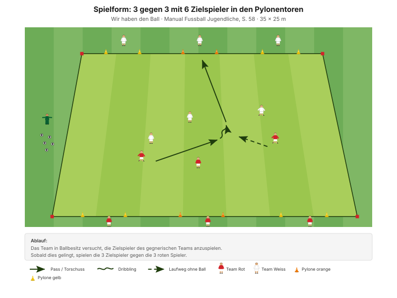
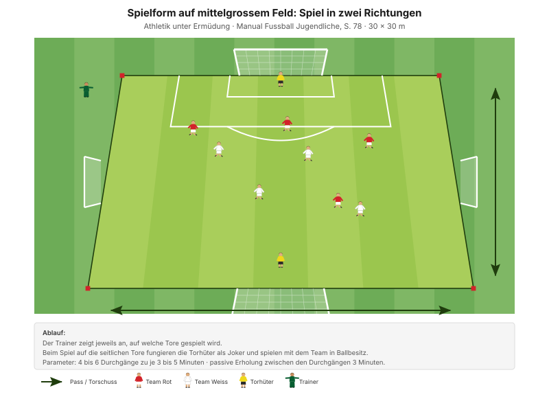

Der gefährlichste Moment im Spiel ist nicht der Ballverlust – sondern die drei Sekunden danach. Da steht das eigene Team noch offensiv, der Gegner hat freie Bahn. Wer sofort nachsetzt, dreht den Moment um.
"Jede Spielerin reagiert im Umschaltmoment blitzschnell" SFV-Lernbaustein "Einstieg TA: Spielsituation rasch erkennen und blitzschnell entscheiden", Phase 2
Die Regel des Abends: Der nächste Spieler geht sofort drauf, nicht der, der den Ball verloren hat. Wer eben noch gestürzt ist, kommt zu spät – die anderen sind näher dran und stehen besser.
Zur Quellenlage: Das Manual hat für die Umschaltphasen kein eigenes Good-Practice-Kapitel. Die Formen stammen deshalb aus den beiden Hauptphasen – ausgewählt wurden diejenigen, die das Manual ausdrücklich mit einem Rollentausch oder einer Umschaltphase beschreibt.
Das Manual fragt in den Entwicklungsfragen ausdrücklich "Wer kommuniziert wann, was, wie?", beantwortet es aber nicht. Für D-Junioren reichen drei feste Kommandos:
Diese drei Rufe stehen so nicht in den J+S-Unterlagen – sie sind eine eigene Ergänzung. Aus allgemeinem Fussballwissen: mehr als drei Kommandos merkt sich ein D-Junior im Spiel nicht.
| Zeit | Min | Teil | Inhalt |
|---|---|---|---|
| 0–4 | 4 | Besammlung | Thema ansagen, Gruppen einteilen |
| 4–16 | 12 | E1 | Ballzirkulation im Team · Big 4 zwischen den Wiederholungen |
| 16–22 | 6 | E2 | 2 Teams gegen 1 Team |
| 22–30 | 8 | E3 | Sprint mit und ohne Ball (Explosivität) |
| 30–45 | 15 | H1 | 3 gegen 3 mit 6 Zielspielern |
| 45–48 | 3 | Pause | Trinken, Umbau |
| 48–70 | 22 | H2 | Spiel in zwei Richtungen |
| 70–82 | 12 | Abschluss | Freies Spiel 5 gegen 5 plus 2 Torhüter |
| 82–90 | 8 | Ausklang | Cool-down, zwei Entwicklungsfragen, Verabschiedung |
| Total | 90 |
Einstieg 26 · Hauptteil 37 · Abschluss 20 Min. – nach dem Trainingsschema des Manuals (S. 43).
Nur einmal umbauen: Das Einstiegsfeld wird in der Pause zum Spielfeld mit vier Toren.
Eigene Skizze · Platzaufteilung
Nur einmal aufbauen – das Einstiegsfeld liegt im späteren Spielfeld.
12 Minuten · 30 × 25 m · 3 Teams à 4 · alle 12 Spieler
Eigene Skizze · Ballzirkulation im Team
3 Wiederholungen à 1'30''–2' – zwischen den Wiederholungen je zwei Präventionsübungen.
"Flache, scharfe Pässe" SFV-Lernbaustein "Einstieg TA: Spielsituation rasch erkennen und blitzschnell entscheiden", Phase 1
Heutiger Blickwinkel: Drei Bälle im selben Raum zwingen dazu, ständig zu schauen. Wer den Kopf unten hat, merkt den Ballverlust erst, wenn es zu spät ist.
Je zwei Übungen zwischen den Wiederholungen, 25 Sekunden pro Übung:
| Bereich | Übung | Worauf achten |
|---|---|---|
| Fussgelenk | Einbeinsprünge vorwärts | Bei der Landung knickt das Knie nicht ein, Blick nach vorne. |
| Knie | Copenhagen | Schulter, Hüfte, Knie und Fussgelenk in einer Linie, unteres Bein gestreckt. |
| Hüfte | Brücke | Knie hüftbreit, Oberschenkel in einer Linie mit dem Körper. |
| Hamstrings | Brücke mit Fersengang | Becken hochhalten, damit Schulter, Hüfte und Knie eine Linie bilden. |
"Arbeit mit Zeitvorgaben – nicht mit Anzahl Wiederholungen." Prinzip Körperstabilität, Manual Fussball Jugendliche, S. 75
Zwei Punkte pro Übung nennen, nicht mehr. Qualität vor Tempo.
6 Minuten · gleiches Feld · 3 Wiederholungen à 1'30''–2'
Manual-Vorlage · Diagramm 15 "2 Teams gegen 1 Team" (S. 62)

Mit der Umschaltregel des Lernbausteins: Wer den Ball verliert, verteidigt.
Das ist Gegenpressing in Reinform: Der Ballverlust bestraft sich selbst, und zwar sofort. Wer eine Sekunde braucht, um die neue Rolle zu begreifen, hat schon verloren.
8 Minuten · 2 Bahnen · Paare bilden
| Parameter | Vorgabe |
|---|---|
| Distanz | 30+ m |
| Wiederholungen | 2 |
| Pause zwischen Wiederholungen | 1/20 |
| Serien | 2 |
| Pause zwischen Serien | 2'–3' |
"Erholungszeit: 10- bis 20-fache Dauer der Belastungszeit, abhängig von der Laufdistanz. Vollständig erholen zwischen den Wiederholungen." Prinzipien Explosivität, Manual Fussball Jugendliche, S. 72
15 Minuten · 35 × 25 m · alle 12 Spieler
Manual-Vorlage · Diagramm 03 "3 gegen 3 mit 6 Zielspielern in den Pylonentoren" (S. 58)

3 + 3 + 6 = genau 12. Passt ohne Anpassung auf den Kader.
"Sobald dies gelingt, spielen die 3 Zielspieler gegen die 3 roten Spieler." Spielform, Manual Fussball Jugendliche, S. 58 (Diagramm 03) · 35 × 25 Meter
Der Rollentausch ist hier in die Form eingebaut und kommt alle paar Sekunden. Wer eben angegriffen hat, verteidigt einen Wimpernschlag später – ohne Pfiff, ohne Ansage. Genau diese Umstellung im Kopf ist das Thema.
22 Minuten · 30 × 30 m · alle 12 Spieler
Manual-Vorlage · Diagramm 56 "Spiel in zwei Richtungen" (S. 78)

Vier Tore – der Trainer bestimmt mitten im Spiel, auf welche gespielt wird.
Der Richtungswechsel auf Zuruf erzeugt denselben Zustand wie ein Ballverlust: Von einem Moment auf den anderen stimmt die eigene Ordnung nicht mehr, und alle müssen gleichzeitig umdenken. Nur passiert es hier planbar oft statt zufällig zwei- oder dreimal pro Trainingsspiel.
12 Minuten · gleiches Feld, kein Umbau
Keine Auflagen, keine Bonusregeln. Hier wird sichtbar, was von den 70 Minuten davor hängen geblieben ist.
8 Minuten · Cool-down im Gehen, dann Kreis in der Mitte
Zuerst 3–4 Minuten lockeres Auslaufen und Mobilität, dann der Kreis. Zwei Fragen – die Antworten kommen von den Spielern, nicht vom Trainer:
"Habt ihr die gegnerischen Angriffe erfolgreich unterbunden? Wenn nein, welches Prinzip habt ihr vernachlässigt? Was müsst ihr verbessern (individuell/als Gruppe)?"
"Hast du kommuniziert? Wie kommunizierst du noch besser? Wer kommuniziert wann, was, wie?" Entwicklungsfragen zur Spielphase "Wir haben den Ball nicht", Manual Fussball Jugendliche, S. 69
Material aufräumen – laut Teamregel Respekt Teamarbeit, nicht Strafe.
| Teil | Vorlage | Seite |
|---|---|---|
| E1 – E3 | SFV-Lernbaustein "Einstieg TA: Spielsituation rasch erkennen und blitzschnell entscheiden", Phasen 1–3 | – |
| E2 | Spielform "2 Teams gegen 1 Team" (Diagramm 15) | 62 |
| H1 | Spielform "3 gegen 3 mit 6 Zielspielern" (Diagramm 03) | 58 |
| H2 | Ermüdungsresistenz "Spiel in zwei Richtungen" (Diagramm 56) | 78 |
| Ziele, Coaching, Entwicklungsfragen | Kapitelkopf "Wir haben den Ball nicht" | 69 |
| Drei-Sekunden-Regel, die drei Rufe | Eigene Ergänzung | – |
| Explosivität, Körperstabilität | Athletik und Gesundheit | 72, 75 |
| Trainingsaufbau | Trainingsschema (Abb. 19) | 43–45 |
Alle Seitenangaben beziehen sich auf das J+S Manual Fussball Jugendliche (BASPO/SFV, 2022). Spielerzahlen und Feldmasse sind auf einen Kader von 12 Spielern angepasst. Dieser Trainingsplan wurde mit Unterstützung von KI (Claude, Anthropic) erstellt.